71 materiais do PDF de opcionais, edição 11/07/2026. Os originais e recortes mantêm os píxeis da fonte; não são mapas calibrados. Escala, brilho e repetição são hipóteses de visualização. Compatibilidade específica com a unidade de 72 m² por confirmar. Sem equivalências RAL/NCS inventadas.
Tijolo Cinza Série Tijolo · Parede exterior · p. 7
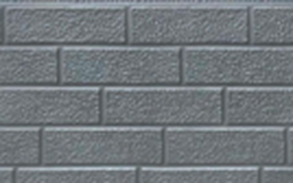
Original · 480 × 300 px 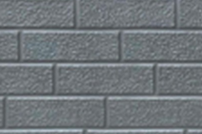
Recorte · 402 × 267 px Código publicado Não publicado Aplicação Textura do recorte original Cor aproximada Repetição estimada 0.553 × 0.367 m Rugosidade / metalicidade 0.72 / 0 · hipóteses exterior-3d-textures-tijolo-cinza Tijolo Bordô Série Tijolo · Parede exterior · p. 7
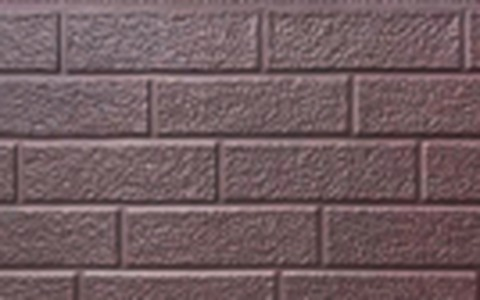
Original · 480 × 300 px 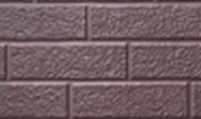
Recorte · 334 × 198 px Código publicado Não publicado Aplicação Textura do recorte original Cor aproximada Repetição estimada 0.459 × 0.272 m Rugosidade / metalicidade 0.72 / 0 · hipóteses exterior-3d-textures-tijolo-bordo Tijolo Creme Série Tijolo · Parede exterior · p. 7
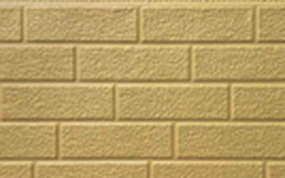
Original · 480 × 300 px 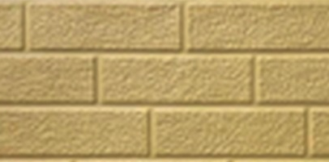
Recorte · 406 × 201 px Código publicado Não publicado Aplicação Textura do recorte original Cor aproximada Repetição estimada 0.558 × 0.276 m Rugosidade / metalicidade 0.72 / 0 · hipóteses exterior-3d-textures-tijolo-creme Tijolo Vermelho Série Tijolo · Parede exterior · p. 7
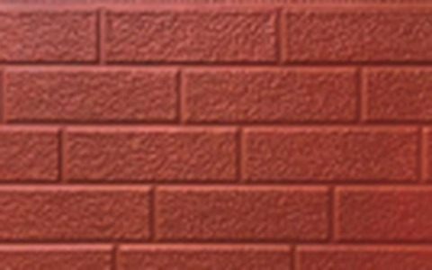
Original · 480 × 300 px 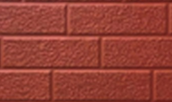
Recorte · 340 × 202 px Código publicado Não publicado Aplicação Textura do recorte original Cor aproximada Repetição estimada 0.468 × 0.278 m Rugosidade / metalicidade 0.72 / 0 · hipóteses exterior-3d-textures-tijolo-vermelho Pedra Areia Série Pedra · Parede exterior · p. 7
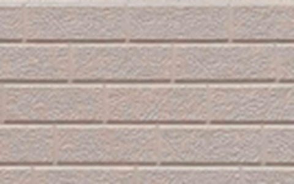
Original · 480 × 300 px 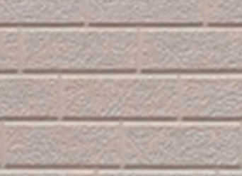
Recorte · 342 × 248 px Código publicado Não publicado Aplicação Textura do recorte original Cor aproximada Repetição estimada 0.470 × 0.341 m Rugosidade / metalicidade 0.72 / 0 · hipóteses exterior-3d-textures-pedra-areia Bloco Cinza Série Pedra · Parede exterior · p. 7
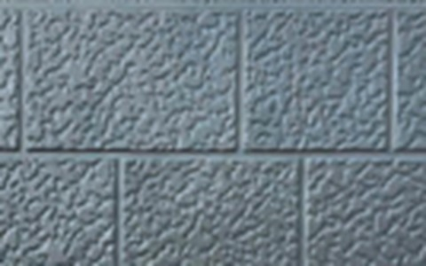
Original · 480 × 300 px 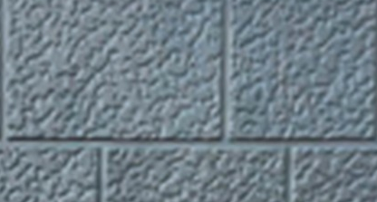
Recorte · 416 × 223 px Código publicado Não publicado Aplicação Textura do recorte original Cor aproximada Repetição estimada 0.693 × 0.372 m Rugosidade / metalicidade 0.72 / 0 · hipóteses exterior-3d-textures-bloco-cinza Tijolo Castanho Série Tijolo · Parede exterior · p. 7
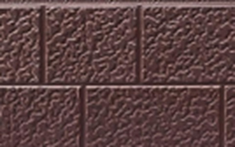
Original · 480 × 300 px 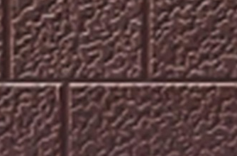
Recorte · 334 × 220 px Código publicado Não publicado Aplicação Textura do recorte original Cor aproximada Repetição estimada 0.557 × 0.367 m Rugosidade / metalicidade 0.72 / 0 · hipóteses exterior-3d-textures-tijolo-castanho Pedra Bege Série Pedra · Parede exterior · p. 7
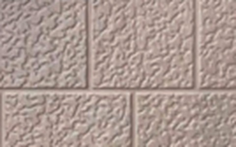
Original · 480 × 300 px 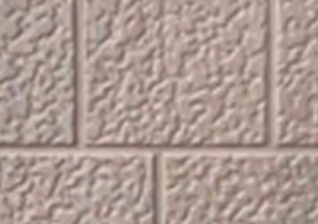
Recorte · 360 × 253 px Código publicado Não publicado Aplicação Textura do recorte original Cor aproximada Repetição estimada 0.600 × 0.422 m Rugosidade / metalicidade 0.72 / 0 · hipóteses exterior-3d-textures-pedra-bege Tijolo Multicor Série Rústica · Parede exterior · p. 7
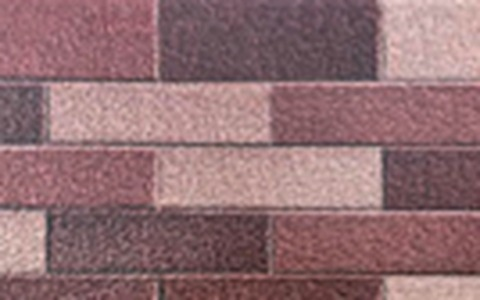
Original · 480 × 300 px 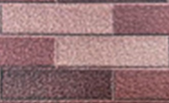
Recorte · 336 × 204 px Código publicado Não publicado Aplicação Textura do recorte original Cor aproximada Repetição estimada 0.462 × 0.281 m Rugosidade / metalicidade 0.72 / 0 · hipóteses exterior-3d-textures-tijolo-multicor Tijolo Ardósia Série Rústica · Parede exterior · p. 7
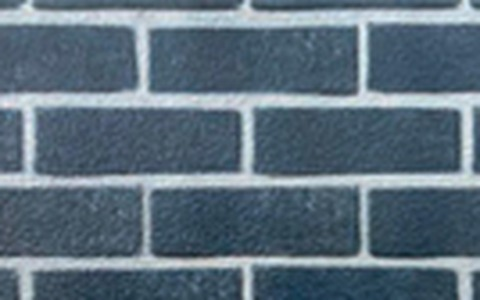
Original · 480 × 300 px 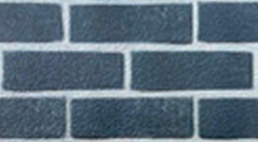
Recorte · 440 × 243 px Código publicado Não publicado Aplicação Textura do recorte original Cor aproximada Repetição estimada 0.605 × 0.334 m Rugosidade / metalicidade 0.72 / 0 · hipóteses exterior-3d-textures-tijolo-ardosia Tijolo Rústico Série Rústica · Parede exterior · p. 7
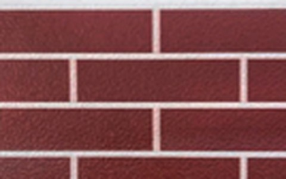
Original · 480 × 300 px 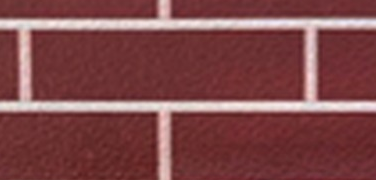
Recorte · 376 × 180 px Código publicado Não publicado Aplicação Textura do recorte original Cor aproximada Repetição estimada 0.517 × 0.247 m Rugosidade / metalicidade 0.72 / 0 · hipóteses exterior-3d-textures-tijolo-rustico Granito Cinza Série Pedra · Parede exterior · p. 7
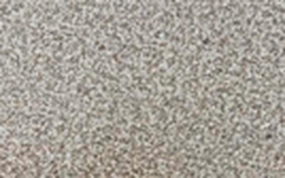
Original · 480 × 300 px 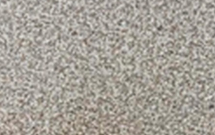
Recorte · 441 × 276 px Código publicado Não publicado Aplicação Textura do recorte original Cor aproximada Repetição estimada 0.276 × 0.172 m Rugosidade / metalicidade 0.72 / 0 · hipóteses exterior-3d-textures-granito-cinza GM-16 Painel 3D · Parede exterior · p. 8
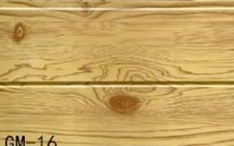
Original · 480 × 300 px 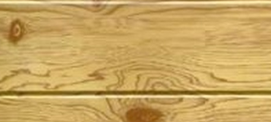
Recorte · 456 × 206 px Código publicado GM-16 Aplicação Textura do recorte original Cor aproximada Repetição estimada 0.855 × 0.386 m Rugosidade / metalicidade 0.72 / 0 · hipóteses exterior-3d-gm-gm-16 GM-17 Painel 3D · Parede exterior · p. 8
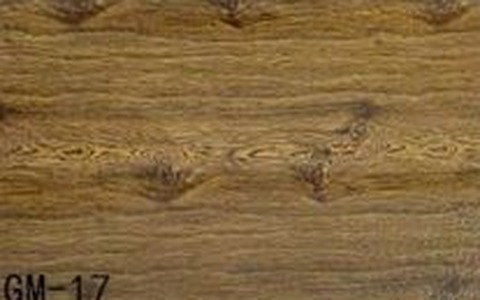
Original · 480 × 300 px 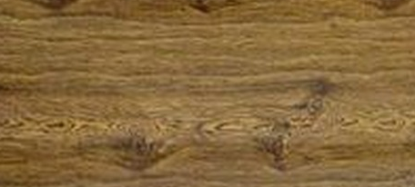
Recorte · 456 × 206 px Código publicado GM-17 Aplicação Textura do recorte original Cor aproximada Repetição estimada 0.855 × 0.386 m Rugosidade / metalicidade 0.72 / 0 · hipóteses exterior-3d-gm-gm-17 GM-18 Painel 3D · Parede exterior · p. 8
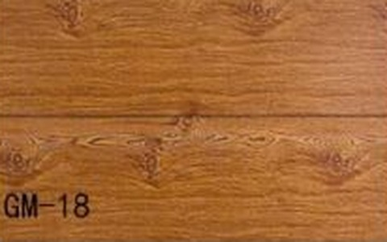
Original · 480 × 300 px 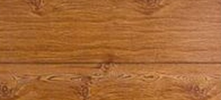
Recorte · 456 × 206 px Código publicado GM-18 Aplicação Textura do recorte original Cor aproximada Repetição estimada 0.855 × 0.386 m Rugosidade / metalicidade 0.72 / 0 · hipóteses exterior-3d-gm-gm-18 GM-19 Painel 3D · Parede exterior · p. 8
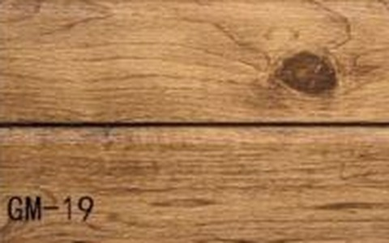
Original · 480 × 300 px 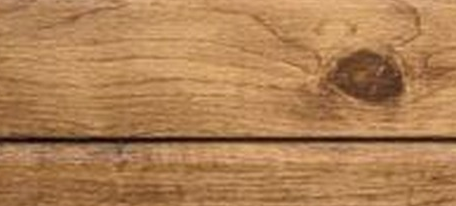
Recorte · 456 × 206 px Código publicado GM-19 Aplicação Textura do recorte original Cor aproximada Repetição estimada 0.855 × 0.386 m Rugosidade / metalicidade 0.72 / 0 · hipóteses exterior-3d-gm-gm-19 GM-20 Painel 3D · Parede exterior · p. 8
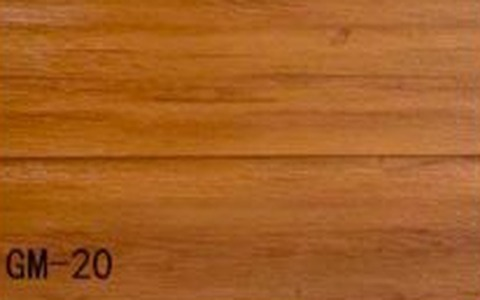
Original · 480 × 300 px 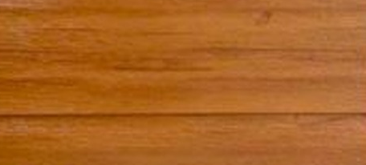
Recorte · 456 × 206 px Código publicado GM-20 Aplicação Textura do recorte original Cor aproximada Repetição estimada 0.855 × 0.386 m Rugosidade / metalicidade 0.72 / 0 · hipóteses exterior-3d-gm-gm-20 GM-21 Painel 3D · Parede exterior · p. 8
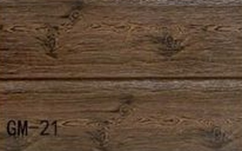
Original · 480 × 300 px 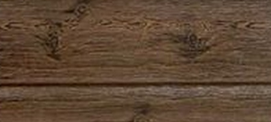
Recorte · 456 × 206 px Código publicado GM-21 Aplicação Textura do recorte original Cor aproximada Repetição estimada 0.855 × 0.386 m Rugosidade / metalicidade 0.72 / 0 · hipóteses exterior-3d-gm-gm-21 GM-22 Painel 3D · Parede exterior · p. 8
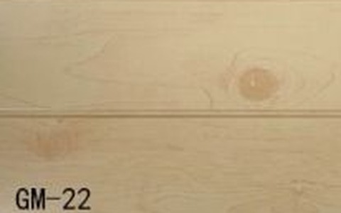
Original · 480 × 300 px 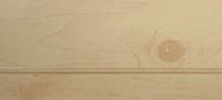
Recorte · 456 × 206 px Código publicado GM-22 Aplicação Textura do recorte original Cor aproximada Repetição estimada 0.855 × 0.386 m Rugosidade / metalicidade 0.72 / 0 · hipóteses exterior-3d-gm-gm-22 GM-23 Painel 3D · Parede exterior · p. 8
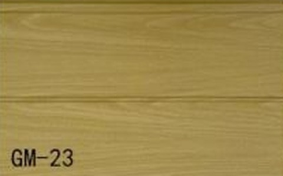
Original · 480 × 300 px 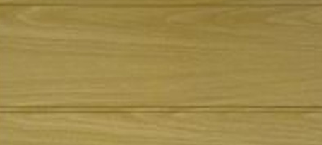
Recorte · 456 × 206 px Código publicado GM-23 Aplicação Textura do recorte original Cor aproximada Repetição estimada 0.855 × 0.386 m Rugosidade / metalicidade 0.72 / 0 · hipóteses exterior-3d-gm-gm-23 GM-24 Painel 3D · Parede exterior · p. 8
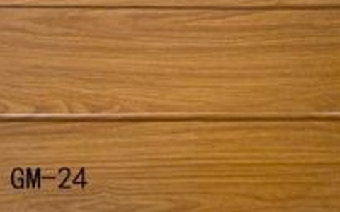
Original · 480 × 300 px 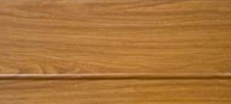
Recorte · 456 × 206 px Código publicado GM-24 Aplicação Textura do recorte original Cor aproximada Repetição estimada 0.855 × 0.386 m Rugosidade / metalicidade 0.72 / 0 · hipóteses exterior-3d-gm-gm-24 GM-25 Painel 3D · Parede exterior · p. 8
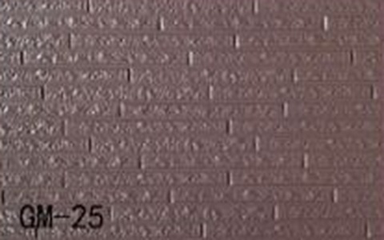
Original · 480 × 300 px 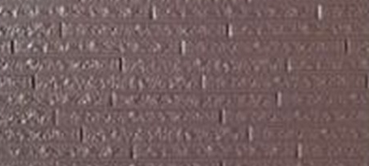
Recorte · 456 × 206 px Código publicado GM-25 Aplicação Textura do recorte original Cor aproximada Repetição estimada 1.140 × 0.515 m Rugosidade / metalicidade 0.72 / 0 · hipóteses exterior-3d-gm-gm-25 GM-26 Painel 3D · Parede exterior · p. 8
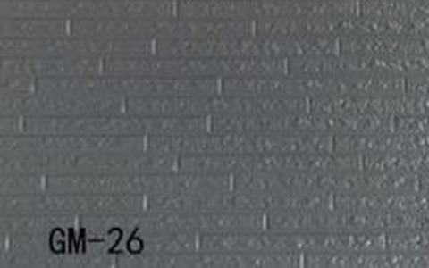
Original · 480 × 300 px 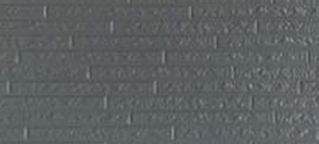
Recorte · 456 × 206 px Código publicado GM-26 Aplicação Textura do recorte original Cor aproximada Repetição estimada 1.140 × 0.515 m Rugosidade / metalicidade 0.72 / 0 · hipóteses exterior-3d-gm-gm-26 GM-27 Painel 3D · Parede exterior · p. 8
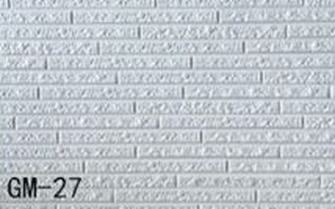
Original · 480 × 300 px 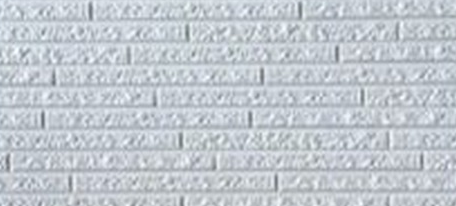
Recorte · 456 × 206 px Código publicado GM-27 Aplicação Textura do recorte original Cor aproximada Repetição estimada 1.140 × 0.515 m Rugosidade / metalicidade 0.72 / 0 · hipóteses exterior-3d-gm-gm-27 GM-28 Painel 3D · Parede exterior · p. 8
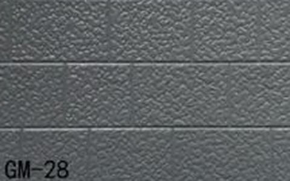
Original · 480 × 300 px 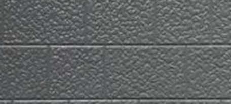
Recorte · 456 × 206 px Código publicado GM-28 Aplicação Textura do recorte original Cor aproximada Repetição estimada 0.760 × 0.343 m Rugosidade / metalicidade 0.72 / 0 · hipóteses exterior-3d-gm-gm-28 GM-29 Painel 3D · Parede exterior · p. 8
Original · 480 × 300 px Recorte · 456 × 206 px
Código publicado GM-29 Aplicação Textura do recorte original Cor aproximada Repetição estimada 0.760 × 0.343 m Rugosidade / metalicidade 0.72 / 0 · hipóteses exterior-3d-gm-gm-29 GM-30 Painel 3D · Parede exterior · p. 8
Original · 480 × 300 px Recorte · 456 × 206 px
Código publicado GM-30 Aplicação Textura do recorte original Cor aproximada Repetição estimada 0.760 × 0.343 m Rugosidade / metalicidade 0.72 / 0 · hipóteses exterior-3d-gm-gm-30 Madeira Mel Acabamento Madeira · Parede exterior · p. 9
Original · 480 × 300 px Recorte · 441 × 276 px
Código publicado Não publicado Aplicação Textura do recorte original Cor aproximada Repetição estimada 0.276 × 0.172 m Rugosidade / metalicidade 0.72 / 0 · hipóteses exterior-finishes-madeira-mel Lamela Branca Série Ondulada · Parede exterior · p. 9
Original · 480 × 300 px Recorte · 441 × 276 px
Código publicado Não publicado Aplicação Textura do recorte original Cor aproximada Repetição estimada 0.827 × 0.517 m Rugosidade / metalicidade 0.72 / 0 · hipóteses exterior-finishes-lamela-branca Lamela Bege Série Ondulada · Parede exterior · p. 9
Original · 480 × 300 px Recorte · 441 × 276 px
Código publicado Não publicado Aplicação Textura do recorte original Cor aproximada Repetição estimada 0.827 × 0.517 m Rugosidade / metalicidade 0.72 / 0 · hipóteses exterior-finishes-lamela-bege Lamela Creme Série Ondulada · Parede exterior · p. 9
Original · 480 × 300 px Recorte · 441 × 276 px
Código publicado Não publicado Aplicação Textura do recorte original Cor aproximada Repetição estimada 0.827 × 0.517 m Rugosidade / metalicidade 0.72 / 0 · hipóteses exterior-finishes-lamela-creme Lamela Dourada Série Ondulada · Parede exterior · p. 9
Original · 480 × 300 px Recorte · 441 × 276 px
Código publicado Não publicado Aplicação Textura do recorte original Cor aproximada Repetição estimada 0.827 × 0.517 m Rugosidade / metalicidade 0.72 / 0 · hipóteses exterior-finishes-lamela-dourada Lamela Cinza Série Ondulada · Parede exterior · p. 9
Original · 480 × 300 px Recorte · 441 × 276 px
Código publicado Não publicado Aplicação Textura do recorte original Cor aproximada Repetição estimada 0.827 × 0.517 m Rugosidade / metalicidade 0.72 / 0 · hipóteses exterior-finishes-lamela-cinza Lamela Bordô Série Ondulada · Parede exterior · p. 9
Original · 480 × 300 px Recorte · 441 × 276 px
Código publicado Não publicado Aplicação Textura do recorte original Cor aproximada Repetição estimada 0.827 × 0.517 m Rugosidade / metalicidade 0.72 / 0 · hipóteses exterior-finishes-lamela-bordo Grafite Cor Lisa · Parede exterior · p. 9
Original · 480 × 300 px Recorte · 441 × 276 px
Código publicado Não publicado Aplicação Textura do recorte original Cor aproximada Repetição estimada 0.276 × 0.172 m Rugosidade / metalicidade 0.72 / 0 · hipóteses exterior-finishes-grafite Preto Cor Lisa · Parede exterior · p. 9
Original · 480 × 300 px Recorte · 441 × 276 px
Código publicado Não publicado Aplicação Textura do recorte original Cor aproximada Repetição estimada 0.276 × 0.172 m Rugosidade / metalicidade 0.72 / 0 · hipóteses exterior-finishes-preto Vermelho Cor Lisa · Parede exterior · p. 9
Original · 480 × 300 px Recorte · 441 × 276 px
Código publicado Não publicado Aplicação Textura do recorte original Cor aproximada Repetição estimada 0.276 × 0.172 m Rugosidade / metalicidade 0.72 / 0 · hipóteses exterior-finishes-vermelho Areia Cor Lisa · Parede exterior · p. 9
Original · 480 × 300 px Recorte · 441 × 276 px
Código publicado Não publicado Aplicação Textura do recorte original Cor aproximada Repetição estimada 0.276 × 0.172 m Rugosidade / metalicidade 0.72 / 0 · hipóteses exterior-finishes-areia Granito Branco Série Pedra · Parede exterior · p. 9
Original · 480 × 300 px Recorte · 441 × 276 px
Código publicado Não publicado Aplicação Textura do recorte original Cor aproximada Repetição estimada 0.276 × 0.172 m Rugosidade / metalicidade 0.72 / 0 · hipóteses exterior-finishes-granito-branco Pedra Cinza Padrão pedra · Parede exterior · p. 10
Original · 480 × 300 px Recorte · 441 × 276 px
Código publicado Não publicado Aplicação Textura do recorte original Cor aproximada Repetição estimada 0.597 × 0.374 m Rugosidade / metalicidade 0.72 / 0 · hipóteses exterior-standard-pedra-cinza Cinza Metálico Acabamento liso · Parede exterior · p. 10
Original · 480 × 300 px Recorte · 85 × 105 px
Código publicado Não publicado Aplicação Cor aproximada do recorte Cor aproximada Repetição estimada 0.115 × 0.142 m Rugosidade / metalicidade 0.72 / 0 · hipóteses exterior-standard-cinza-metalico Prata Acabamento liso · Parede exterior · p. 10
Original · 480 × 300 px Recorte · 240 × 100 px
Código publicado Não publicado Aplicação Cor aproximada do recorte Cor aproximada Repetição estimada 0.325 × 0.135 m Rugosidade / metalicidade 0.72 / 0 · hipóteses exterior-standard-prata Madeira Castanho Padrão madeira · Parede exterior · p. 10
Original · 480 × 300 px Recorte · 193 × 262 px
Código publicado Não publicado Aplicação Textura do recorte original Cor aproximada Repetição estimada 0.261 × 0.355 m Rugosidade / metalicidade 0.72 / 0 · hipóteses exterior-standard-madeira-castanho Cinza Pérola Acabamento liso · Parede exterior · p. 10
Original · 480 × 300 px Recorte · 230 × 160 px
Código publicado Não publicado Aplicação Cor aproximada do recorte Cor aproximada Repetição estimada 0.311 × 0.217 m Rugosidade / metalicidade 0.72 / 0 · hipóteses exterior-standard-cinza-perola Madeira Mel Padrão madeira · Parede exterior · p. 10
Original · 480 × 300 px Recorte · 441 × 276 px
Código publicado Não publicado Aplicação Textura do recorte original Cor aproximada Repetição estimada 0.597 × 0.374 m Rugosidade / metalicidade 0.72 / 0 · hipóteses exterior-standard-madeira-mel Madeira Cerejeira Padrão madeira · Parede exterior · p. 10
Original · 480 × 300 px Recorte · 388 × 153 px
Código publicado Não publicado Aplicação Textura do recorte original Cor aproximada Repetição estimada 0.525 × 0.207 m Rugosidade / metalicidade 0.72 / 0 · hipóteses exterior-standard-madeira-cerejeira Cinza Quente Acabamento liso · Parede exterior · p. 10
Original · 480 × 300 px Recorte · 230 × 225 px
Código publicado Não publicado Aplicação Cor aproximada do recorte Cor aproximada Repetição estimada 0.311 × 0.305 m Rugosidade / metalicidade 0.72 / 0 · hipóteses exterior-standard-cinza-quente Grafite Acabamento liso · Parede exterior · p. 10
Original · 480 × 300 px Recorte · 210 × 240 px
Código publicado Não publicado Aplicação Cor aproximada do recorte Cor aproximada Repetição estimada 0.284 × 0.325 m Rugosidade / metalicidade 0.72 / 0 · hipóteses exterior-standard-grafite Branco Glacial Acabamento liso · Parede exterior · p. 10
Original · 480 × 300 px Recorte · 270 × 210 px
Código publicado Não publicado Aplicação Cor aproximada do recorte Cor aproximada Repetição estimada 0.366 × 0.284 m Rugosidade / metalicidade 0.72 / 0 · hipóteses exterior-standard-branco-glacial Bege Marfim Acabamento liso · Parede exterior · p. 10
Original · 480 × 300 px Recorte · 230 × 120 px
Código publicado Não publicado Aplicação Cor aproximada do recorte Cor aproximada Repetição estimada 0.311 × 0.163 m Rugosidade / metalicidade 0.72 / 0 · hipóteses exterior-standard-bege-marfim Vermelho Borgonha Acabamento liso · Parede exterior · p. 10
Original · 480 × 300 px Recorte · 365 × 205 px
Código publicado Não publicado Aplicação Cor aproximada do recorte Cor aproximada Repetição estimada 0.494 × 0.278 m Rugosidade / metalicidade 0.72 / 0 · hipóteses exterior-standard-vermelho-borgonha KX7005 SPC · Piso interior · p. 14
Original · 480 × 300 px Recorte · 440 × 233 px
Código publicado KX7005 Aplicação Textura do recorte original Cor aproximada Repetição estimada 0.458 × 0.243 m Rugosidade / metalicidade 0.52 / 0 · hipóteses floor-spc-kx7005 KX7006 SPC · Piso interior · p. 14
Original · 480 × 300 px Recorte · 440 × 233 px
Código publicado KX7006 Aplicação Textura do recorte original Cor aproximada Repetição estimada 0.458 × 0.243 m Rugosidade / metalicidade 0.52 / 0 · hipóteses floor-spc-kx7006 KX7007 SPC · Piso interior · p. 14
Original · 480 × 300 px Recorte · 440 × 233 px
Código publicado KX7007 Aplicação Textura do recorte original Cor aproximada Repetição estimada 0.458 × 0.243 m Rugosidade / metalicidade 0.52 / 0 · hipóteses floor-spc-kx7007 KX7008 SPC · Piso interior · p. 14
Original · 480 × 300 px Recorte · 440 × 233 px
Código publicado KX7008 Aplicação Textura do recorte original Cor aproximada Repetição estimada 0.458 × 0.243 m Rugosidade / metalicidade 0.52 / 0 · hipóteses floor-spc-kx7008 KX7009 SPC · Piso interior · p. 14
Original · 480 × 300 px Recorte · 440 × 233 px
Código publicado KX7009 Aplicação Textura do recorte original Cor aproximada Repetição estimada 0.458 × 0.243 m Rugosidade / metalicidade 0.52 / 0 · hipóteses floor-spc-kx7009 KX7010 SPC · Piso interior · p. 14
Original · 480 × 300 px Recorte · 440 × 233 px
Código publicado KX7010 Aplicação Textura do recorte original Cor aproximada Repetição estimada 0.458 × 0.243 m Rugosidade / metalicidade 0.52 / 0 · hipóteses floor-spc-kx7010 KX8005 SPC · Piso interior · p. 14
Original · 480 × 300 px Recorte · 440 × 233 px
Código publicado KX8005 Aplicação Textura do recorte original Cor aproximada Repetição estimada 0.458 × 0.243 m Rugosidade / metalicidade 0.52 / 0 · hipóteses floor-spc-kx8005 KX8006 SPC · Piso interior · p. 14
Original · 480 × 300 px Recorte · 440 × 233 px
Código publicado KX8006 Aplicação Textura do recorte original Cor aproximada Repetição estimada 0.458 × 0.243 m Rugosidade / metalicidade 0.52 / 0 · hipóteses floor-spc-kx8006 KX8007 SPC · Piso interior · p. 14
Original · 480 × 300 px Recorte · 440 × 233 px
Código publicado KX8007 Aplicação Textura do recorte original Cor aproximada Repetição estimada 0.458 × 0.243 m Rugosidade / metalicidade 0.52 / 0 · hipóteses floor-spc-kx8007 KX8008 SPC · Piso interior · p. 14
Original · 480 × 300 px Recorte · 440 × 233 px
Código publicado KX8008 Aplicação Textura do recorte original Cor aproximada Repetição estimada 0.458 × 0.243 m Rugosidade / metalicidade 0.52 / 0 · hipóteses floor-spc-kx8008 KX8009 SPC · Piso interior · p. 14
Original · 480 × 300 px Recorte · 440 × 233 px
Código publicado KX8009 Aplicação Textura do recorte original Cor aproximada Repetição estimada 0.458 × 0.243 m Rugosidade / metalicidade 0.52 / 0 · hipóteses floor-spc-kx8009 KX9005 SPC · Piso interior · p. 14
Original · 480 × 300 px Recorte · 440 × 233 px
Código publicado KX9005 Aplicação Textura do recorte original Cor aproximada Repetição estimada 0.458 × 0.243 m Rugosidade / metalicidade 0.52 / 0 · hipóteses floor-spc-kx9005 Amostra 1 Placa UV · Parede da casa de banho · p. 17
Original · 480 × 300 px Recorte · 441 × 276 px
Código publicado Não publicado Aplicação Textura do recorte original Cor aproximada Repetição estimada 1.470 × 0.920 m Rugosidade / metalicidade 0.36 / 0 · hipóteses bathroom-uv-amostra-1 Amostra 2 Placa UV · Parede da casa de banho · p. 17
Original · 480 × 300 px Recorte · 441 × 276 px
Código publicado Não publicado Aplicação Textura do recorte original Cor aproximada Repetição estimada 1.470 × 0.920 m Rugosidade / metalicidade 0.36 / 0 · hipóteses bathroom-uv-amostra-2 Amostra 3 Placa UV · Parede da casa de banho · p. 17
Original · 480 × 300 px Recorte · 441 × 276 px
Código publicado Não publicado Aplicação Textura do recorte original Cor aproximada Repetição estimada 1.470 × 0.920 m Rugosidade / metalicidade 0.36 / 0 · hipóteses bathroom-uv-amostra-3 Amostra 4 Placa UV · Parede da casa de banho · p. 17
Original · 480 × 300 px Recorte · 441 × 276 px
Código publicado Não publicado Aplicação Textura do recorte original Cor aproximada Repetição estimada 1.470 × 0.920 m Rugosidade / metalicidade 0.36 / 0 · hipóteses bathroom-uv-amostra-4 Amostra 5 Placa UV · Parede da casa de banho · p. 17
Original · 480 × 300 px Recorte · 441 × 276 px
Código publicado Não publicado Aplicação Textura do recorte original Cor aproximada Repetição estimada 1.470 × 0.920 m Rugosidade / metalicidade 0.36 / 0 · hipóteses bathroom-uv-amostra-5 Amostra 6 Placa UV · Parede da casa de banho · p. 17
Original · 480 × 300 px Recorte · 441 × 276 px
Código publicado Não publicado Aplicação Textura do recorte original Cor aproximada Repetição estimada 1.470 × 0.920 m Rugosidade / metalicidade 0.36 / 0 · hipóteses bathroom-uv-amostra-6 Amostra 7 Placa UV · Parede da casa de banho · p. 17
Original · 480 × 300 px Recorte · 441 × 276 px
Código publicado Não publicado Aplicação Textura do recorte original Cor aproximada Repetição estimada 1.470 × 0.920 m Rugosidade / metalicidade 0.36 / 0 · hipóteses bathroom-uv-amostra-7 Amostra 8 Placa UV · Parede da casa de banho · p. 17
Original · 480 × 300 px Recorte · 441 × 276 px
Código publicado Não publicado Aplicação Textura do recorte original Cor aproximada Repetição estimada 1.470 × 0.920 m Rugosidade / metalicidade 0.36 / 0 · hipóteses bathroom-uv-amostra-8